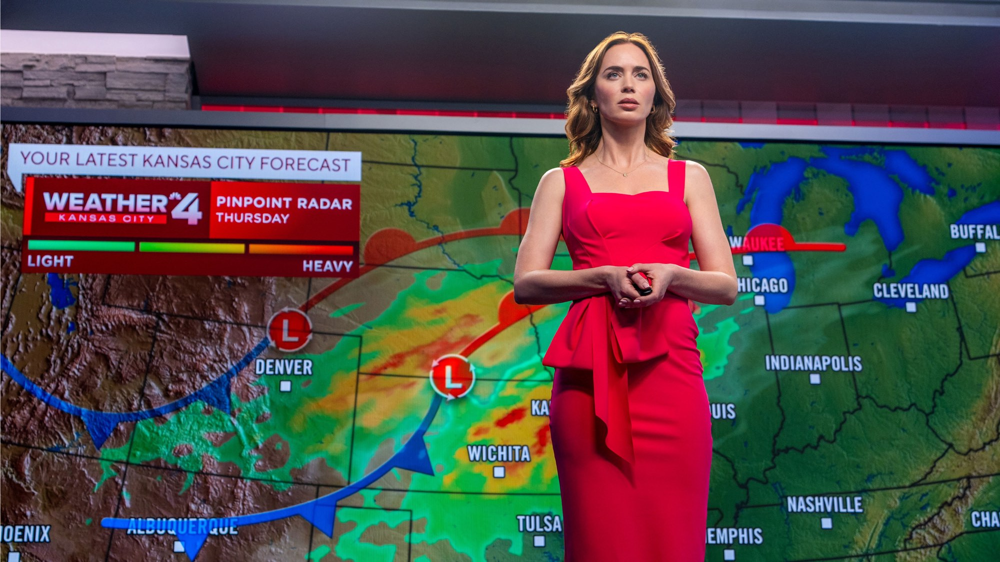
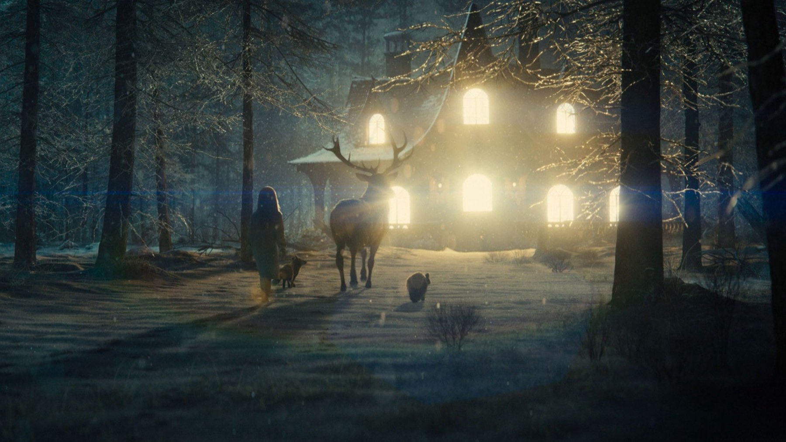

Disclosure Day: la recensione del film di Spielberg
Spielberg torna alla fantascienza con Emily Blunt, Josh O'Connor e Colin Firth: un thriller di inseguimenti che vuole anche commuovere, e ci riesce solo a tratti
Se scoprissi che non siamo soli, e qualcuno te lo dimostrasse, ne avresti paura? Steven Spielberg costruisce Disclosure Day su questa domanda, che il cinema di fantascienza si pone almeno da Incontri ravvicinati del terzo tipo, e la rilancia in un'epoca in cui di verità nascoste, complotti e informazioni manipolate si parla tutti i giorni. È la sua prima incursione nel genere dopo Ready Player One, del 2018. In Italia è uscito al cinema il 10 giugno 2026, due giorni dopo un'anteprima al Moderno di Roma, e ha incassato nel mondo circa 241 milioni di dollari, secondo Wikipedia al 4 agosto 2026, a fronte di un budget di 115.
Di cosa parla Disclosure Day?
Il film segue Margaret Fairchild, interpretata da Emily Blunt: una meteorologa televisiva che si ritrova legata a segreti capaci di cambiare il mondo e che solo lei può raccontare, sempre che riesca a sfuggire a chi vuole zittirla. Con lei c'è il personaggio di Josh O'Connor, il dottor Daniel Kellner, mentre Colin Firth veste i panni di Noah Scanlon, l'uomo di un contractor governativo che le dà la caccia. Non diremo di più: il bello è lasciarsi condurre, e le sorprese del racconto sono meglio di qualunque riassunto.
Un regista che sa ancora far paura
Il punto più forte è la messa in scena. Andrea Fornasiero, su MYmovies, parla di uno Spielberg «maestro della tensione» e porta come esempio un inseguimento a un passaggio a livello, con il treno che piomba sulla scena mentre si spara. Anche Phil de Semlyen su Time Out, che al film dà tre stelle su cinque, ammette che ci sono un paio di sequenze d'azione che pochi altri saprebbero girare, a partire proprio dall'attraversamento ferroviario e dagli inseguimenti in auto. Siamo d'accordo con entrambi: quando la macchina da presa di Spielberg si mette in movimento, gran parte del cinema di consumo recente sembra improvvisamente goffo.
C'è un dato che racconta bene l'approccio: Janusz Kamiński ha girato soprattutto su pellicola 35 mm con ottiche anamorfiche Panavision, una scelta controcorrente, in un'epoca di blockbuster girati in digitale, che dà alle immagini di quiete, come il campo di grano o la casa illuminata nella neve, un'aria quasi da fiaba. Le riprese si sono svolte tra febbraio e maggio 2025 a New York e nel New Jersey, con il titolo di lavorazione Non-View. La colonna sonora è di John Williams, alla sua trentesima collaborazione con il regista: BadTaste la definisce una «miracolosa alchimia» con le immagini, mentre per Time Out è «mercuriale ma tutt'altro che memorabile». Qui ci sentiamo più vicini alla seconda opinione: Williams è sempre Williams, ma questa volta il tema che resta in testa non c'è.

Emily Blunt e il peso del film
Blunt è il motivo per cui il film regge anche quando la sceneggiatura vacilla. Il ruolo di una persona comune trascinata in qualcosa di troppo grande è esattamente il terreno su cui l'attrice dà il meglio: nervosa, ironica, mai eroica per scelta. BadTaste parla di «un'ottima Emily Blunt», e ci sentiamo di aggiungere Josh O'Connor, che porta in un film di inseguimenti una fragilità che evita ogni macchietta. Colin Firth, il cattivo, ha meno spazio per sfumature ed è più un ingranaggio della trama che un personaggio; peccato, perché un antagonista che avesse le sue ragioni avrebbe reso la domanda iniziale ancora più scomoda.
Dove il film inciampa
La sceneggiatura è di David Koepp, da un soggetto dello stesso Spielberg, che secondo Wikipedia ha concepito l'idea nell'estate del 2023 e avrebbe lavorato con Koepp attraverso decine di stesure. Il risultato è ricco di spunti: rivelazione, fede, geopolitica, thriller del complotto. Troppi, per i 147 minuti a disposizione. De Semlyen parla di un tono a scatti, in cui la sceneggiatura fatica a ritagliare spazio per tutte le idee, e BadTaste riconosce una costruzione drammaturgica non sempre impeccabile. Fornasiero, pur apprezzando il film, giudica l'ultima parte verbosa e piuttosto prevedibile. È il difetto che anche noi ci portiamo via dalla sala: la prima ora e mezza fila come un treno, il finale ha il fiato più corto.
Come è stato accolto
La prima mondiale è stata a Parigi il 2 giugno 2026, l'uscita americana il 12 giugno. Secondo Wikipedia, a ottobre 2026, Rotten Tomatoes registra l'80% di recensioni positive e Metacritic un punteggio di 74 su 100. Un quadro che somiglia molto alla nostra impressione: un film solido, a tratti magnifico, lontano dai capolavori del regista ma ben sopra la media dei kolossal di fantascienza recenti.
Dove vederlo e a chi lo consigliamo
A ottobre 2026 non è incluso in nessun abbonamento in streaming in Italia: si può noleggiare o acquistare su Apple TV Store, Rakuten TV, Amazon Video e CHILI, secondo i dati di TMDB aggiornati a ottobre 2026. Lo consigliamo a chi ama lo Spielberg degli inseguimenti e dei grandi spazi americani, a chi vuole rivedere una star come Blunt in un ruolo da protagonista assoluta e a chi cerca un blockbuster per adulti. Chi si aspetta un nuovo Incontri ravvicinati, con lo stesso stupore, resterà probabilmente a metà strada.
Un thriller di fantascienza diretto con la sicurezza di un maestro, trascinato da una grande Emily Blunt e da due o tre sequenze d'azione memorabili. Si indebolisce quando vuole dire troppe cose e chiude con meno forza di come apre. Per noi un buon Spielberg minore, che vale il noleggio.
Domande frequenti
Di cosa parla Disclosure Day?
Di una meteorologa televisiva legata a segreti sull'esistenza di vita extraterrestre, che deve sfuggire a chi vuole metterla a tacere.
Quanto dura Disclosure Day?
147 minuti, cioè due ore e 27.
Dove vedere Disclosure Day in Italia?
In noleggio o acquisto su Apple TV Store, Rakuten TV, Amazon Video e CHILI; non è incluso in abbonamenti streaming.